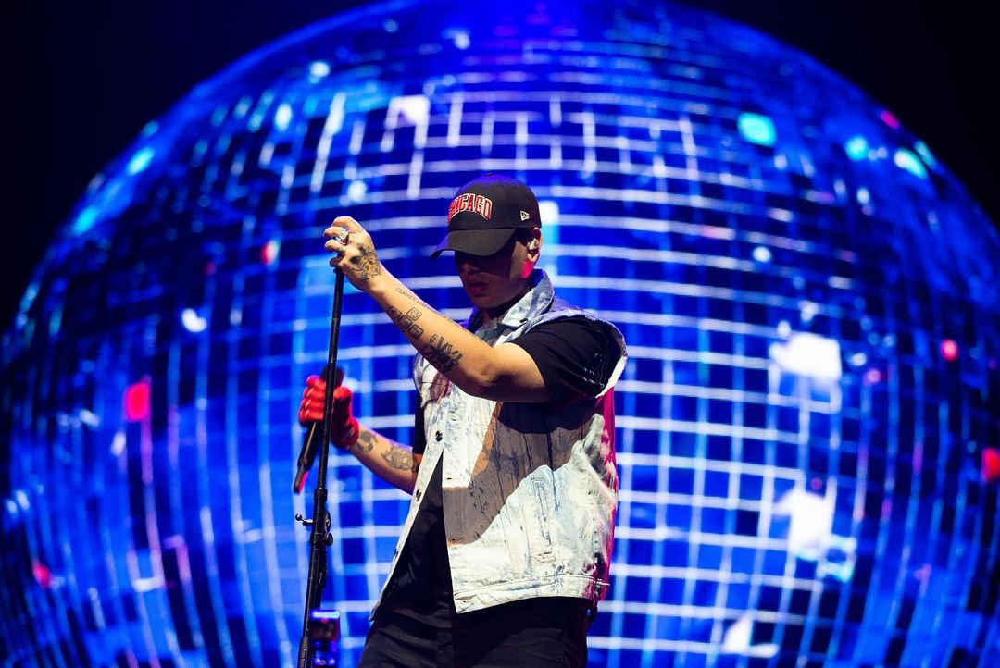

Duki es un rapero argentino nacido en Buenos Aires en 1996. Su nombre real es Mauro Lombardo. Comenzó su carrera en el freestyle y ganó reconocimiento en la escena underground. Se destacó en competiciones como "El Quinto Escalón" y "El Campito Free". Lanzó su primer álbum en solitario, "No Vendo Trap", en 2017, que incluye éxitos como "She Don't Give a FO" y "Hello Cotto". Su estilo combina ritmos de trap con influencias de reggaetón y música urbana. Duki se ha convertido en una figura prominente en la escena del rap argentino y ha colaborado con otros artistas reconocidos. Su música aborda temas como la vida en los barrios, el éxito y las relaciones personales.